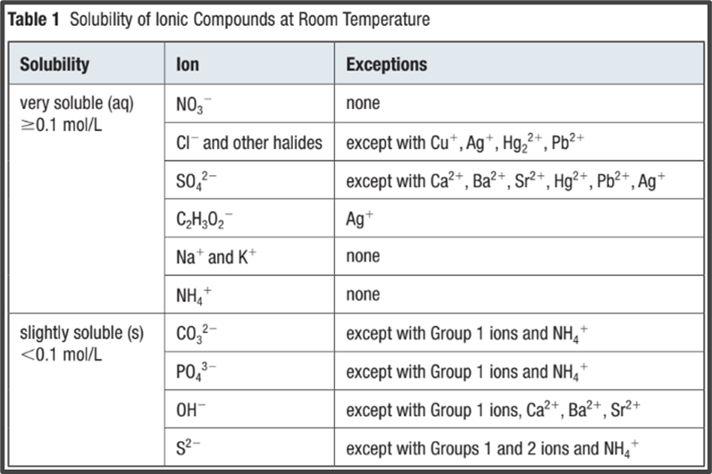

Callout
The barium sulfate required for a barium meal can be produced in the laboratory by mixing solutions of a soluble barium compound like barium chloride with sodium sulfate. The chemical equation for this reaction is:
BaCl2(aq) + NaSO4(aq) ----> BaSO4(s) + 2 NaCl(aq)
Recall that we can predict whether a compound precipitates or remains dissolved by consulting a solubility table (Table 1).
In this case, the precipitate must be barium sulfate, since it is the only compound that is slightly soluble. All the others are very soluble.

Formula Equation